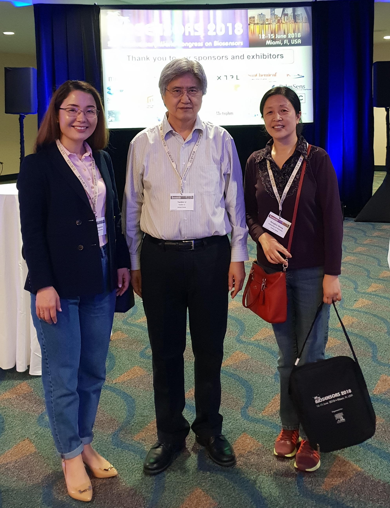
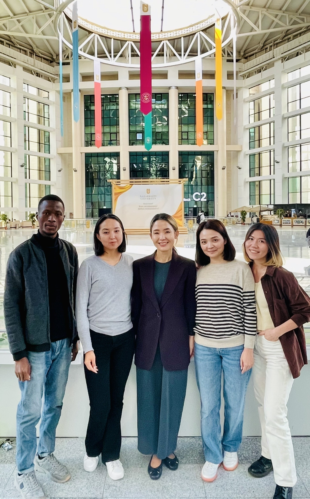
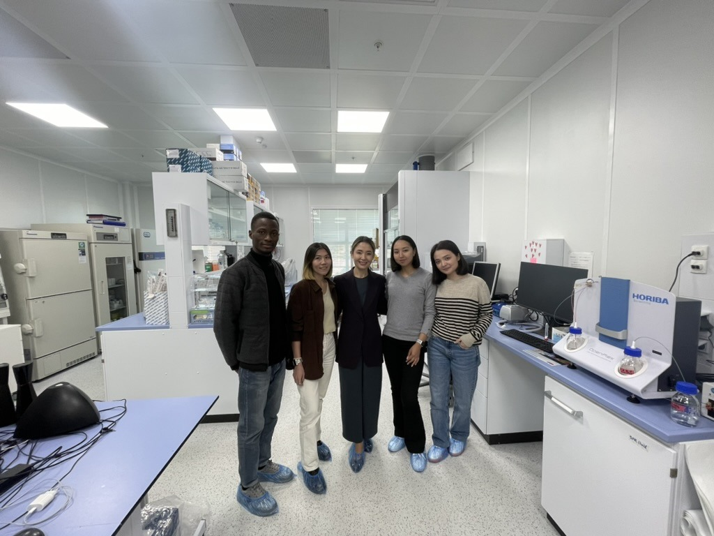

Reading disease in the language of impedance.
Led by Dr. Damira Kanayeva, the laboratory develops aptamer-based electrochemical biosensors for the rapid detection of cancer biomarkers and infectious disease targets. By measuring changes in electrical impedance when a target binds to an aptamer-functionalized electrode, the platform converts molecular recognition into a label-free diagnostic signal within minutes.
Sensors that turn a binding event into a decision
We develop aptamer-based electrochemical impedance spectroscopy (EIS) biosensors that are label-free, rapid, and cost-effective, making them well suited for point-of-care diagnostics. Aptamers — short single-stranded DNA or RNA molecules selected for high-affinity, high-specificity binding to a target — are immobilized on an electrode surface. When the target binds, it alters the electrode's impedance, producing an electrical signal that can be measured directly with a potentiostat. This approach eliminates the need for fluorescent labels, extensive sample preparation, or centralized laboratory infrastructure.
Dr. Kanayeva earned her Ph.D. in Cell and Molecular Biology from the University of Arkansas and joined the Department of Biology at Nazarbayev University as a full-time faculty member in 2011, where she has taught microbiology and molecular biology continuously since. Her biosensors research laboratory has been based in the Department of Biology throughout this period. In parallel with her faculty appointment, she established and led a biosensors laboratory at what is now the National Laboratory Astana (formerly the Center for Energy Research and later NURIS) until 2015. During this time, she also served for two years as Acting Director of Nazarbayev University's newly established Interdisciplinary Instrumental Center, overseeing 53 research staff across eight laboratories. Her group's single-stranded DNA (ssDNA) aptamers targeting the Mycobacterium tuberculosis secreted protein MPT64 formed the basis of a granted Kazakhstani patent. Building on this work, the laboratory developed electrochemical aptasensors that were successfully validated using clinical serum and sputum samples from tuberculosis patients, demonstrating their potential for rapid, label-free point-of-care diagnosis.
Where our sensors are headed
Cancer diagnostics
ssDNA aptasensor for carcinoembryonic antigen (CEA), from aptamer selection through electrochemical detection.
Infectious disease
Aptasensors for tuberculosis, SARS-CoV-2, and monkeypox virus — including simultaneous multi-pathogen detection on a single chip.
Multiplexing & detection strategy
Methods for simultaneous multi-target analyte detection, surface chemistry optimization, and aptamer selection to push specificity and shelf life.
Built for places centralized labs don't reach
Kazakhstan's geography — vast distances between rural clinics and central hospitals — shaped our design priorities from the start: sensors that are stable without cold-chain storage, readable without specialized technicians, and cheap enough to deploy widely.
The lab
Moments from the lab, conferences, and collaborations.


